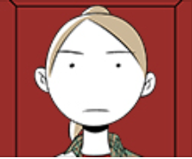

| 27-10 |
 |
| 작가 | AJS 트위터 |
| 장르 | 에피소드, 드라마 |
| 연재 요일 | 일요일 |
| 연재 기간 | 2019. 03. 09 ~ 2019. 10. 05 (완결) |
| 연재처 | 네이버 웹툰 바로가기 |
| 심의 등급 | 전체 이용가 |
개요
시작하기까지 아주 오랜 시간이 걸려서,
어쩌면 영원히 못할 것만 같던 이야기.
그가 지나온 시간의 기록.
27-10은 AJS 작가의 가정 성폭력을 주제로 한 네이버 웹툰이다.
줄거리
특징
등장인물
작품의 주인공. 이름은 밝혀지지 않고 '그녀'라고 지칭된다.
설정 및 세계관